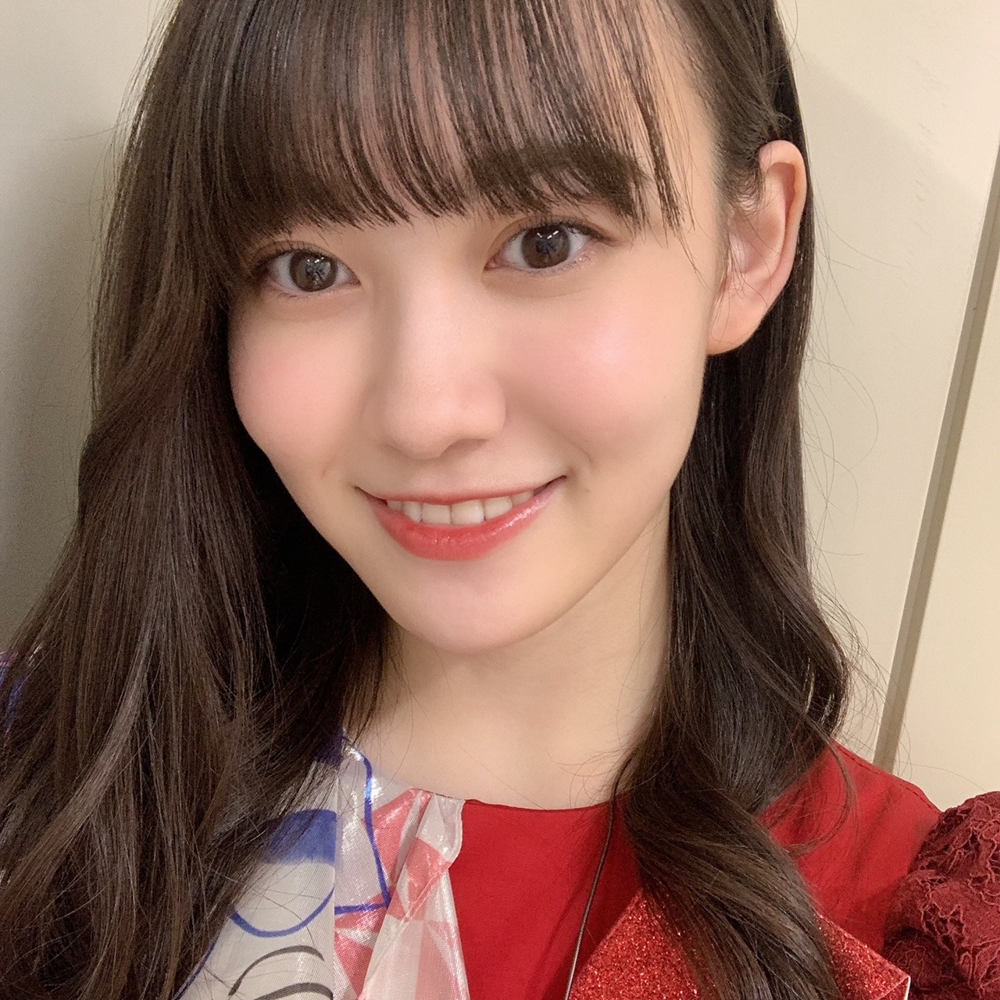
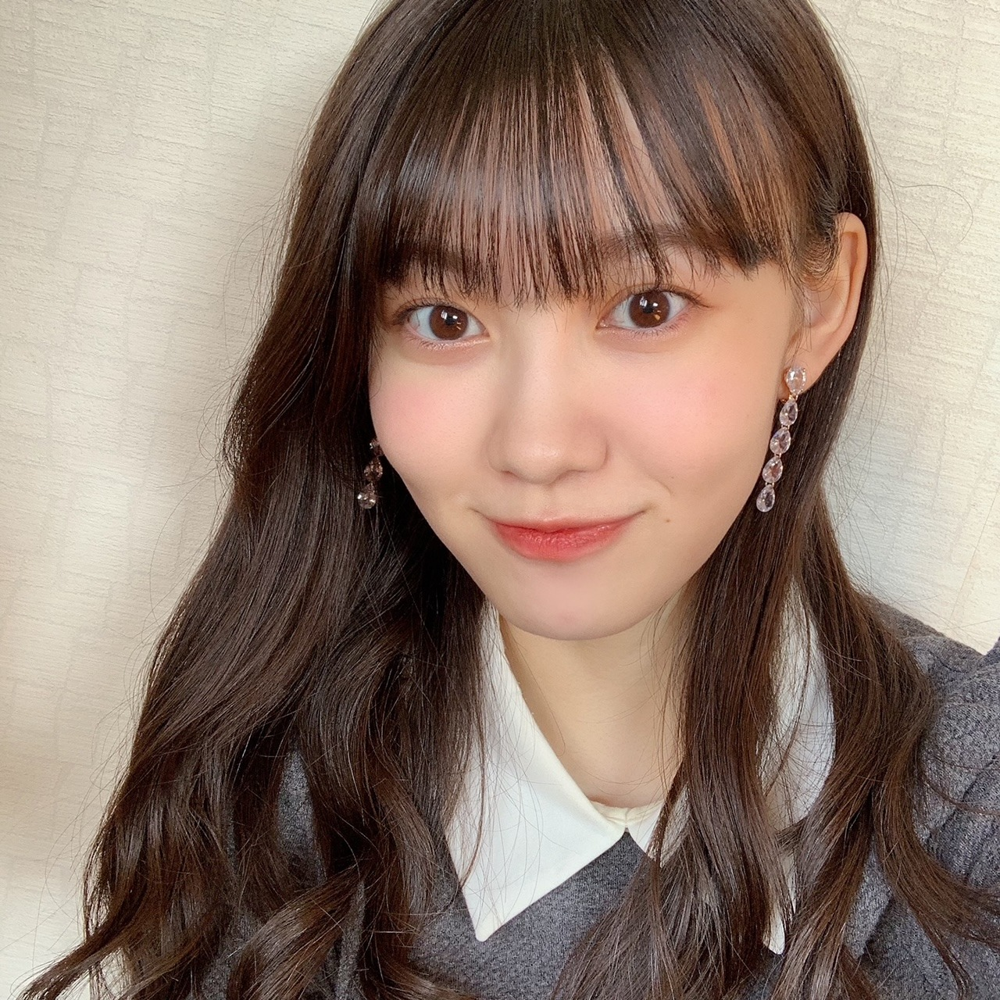
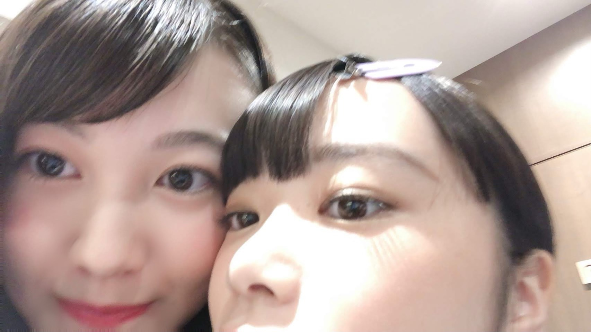
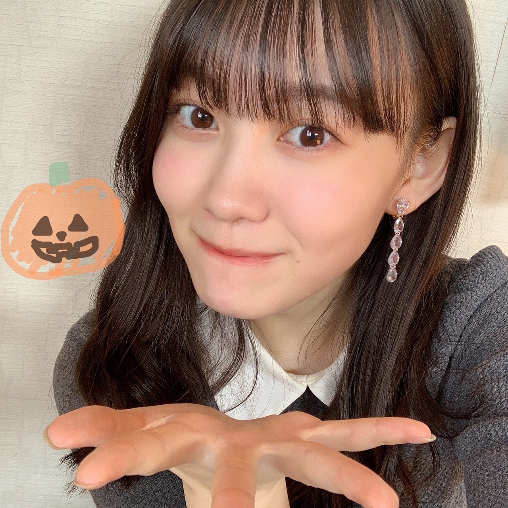

2020/1101Sunあたたかい色 松尾美佑
「Mai Shiraishi Graduation Concert ~
Always beside you ~」
白石麻衣さん、ご卒業おめでとうございます
白石さんに初めてお会いした時、本当に目の前にいらっしゃるのかを疑うくらい美しくて、私はあわあわしてしまいました。
そんな私にもニコッとして下さったこと、
嬉しくてずっと覚えています。
本当に美しくて、キラキラとしていて、
安心させて下さるような白石さんの優しい笑顔が大好きです。
私達新4期生にとって乃木坂46としての初めてのライブは、白石さんとご一緒させて頂く最初で最後のライブでした。
全体でのリハーサルも何もかもが初めてで
出来ない自分に落ち込んだり、不安になったり、でも、本番まで本当に楽しみでした。
モニター越しに輝く白石さんの姿も、
イヤモニから流れる白石さんの歌声も、
そしてステージ上の後ろから見る白石さんの背中も、
全てが美しくて、輝いていて、
気づいたらリハーサルから涙が飛び出てきていました。
近くで白石さんの存在の大きさを全身で感じる事が出来て本当に嬉しかったです。
内側から優しさで溢れていて輝いている白石さんは私の憧れです。
私にできること、私だからできること、
まだまだ見えないものばかりですが
見えないからこそ何があるのか、可能性は無限大
少し斜め上を見ながら、
作り上げてきて下さった先輩方の色を見失わず、自分達の色も探しながら、
私も少しでも乃木坂46の力になれるように精一杯頑張ります。
白石さん、9年間お疲れ様でした。
沢山の希望や感動をありがとうございました
加入したばかりの私にも優しさを分けてくださってありがとうございます。
白石さんの周りを包むキラキラとしたオーラは本当にあたたかい色です。
こんなにも素敵な方と関われたこと、同じステージに立てたこと、一生の宝物です。
一緒に撮ってくださった写真も永遠に宝物にします。
大好きです！

11月になりました
わんわんわんの日ですね
千葉県出身、高校2年生、16歳、
松尾美佑です¨̮
先日はのぎおびありがとうございました¨̮
ちょっと話し過ぎで最後は途中で切れちゃったかもしれなかったです(、._. )、
でも沢山話せて嬉しかったです！
オバケかぼちゃは捕まえられませんでしたが頭にかぼちゃを乗せる事ができて、ハロウィン気分になれて嬉しかったです(੭ ᐕ)੭
皆さんはハロウィン何しました？

私はたこ焼き食べました(๑ت๑)
そして去年のハロウィンはというと、
研修生ツアー中でした〜
1年の過ぎる早さにびびっています。

まともな写真が無い、私とぱる。
1番まともなのがこれでした。
そして！！
10月31日！
さやちゃんんん！
お誕生日おめでとう⸜❤︎⸝
さやちゃんはいつもおしゃれさんです。
あといつも前髪綺麗さんです。
そしていつも気にかけてくれる優しいお姉ちゃんさんでふ。
お目目が綺麗でですね、目が合うといつもドキッとします。( Ꙭ)
楽しい1年になりますように！！
それから今日、渡辺みり愛さん！
お誕生日おめでとうございます！
リハの時についていけずおろおろしていた私達に気づいて声をかけて下さって、すぐに振りを教えてくださって、本当にありがとうございました！
いつも笑顔で挨拶をして下さって本当に嬉しいです！
素敵な1年になりますようにと願っています！
1日遅れでもいいですか？

お菓子ください。
明日は〜
なお〜〜〜〜〜〜〜〜
11月になったね〜
今月は1と6の日に会えますね
また5日後！
ミュウでした¨̮
ばいっっっっっっっ( Ꙭ )/''
昨日の夜すっっっっごい寒かったですね
凍らないように気をつけましょうね(ง ꙭ)ง
コメント(178)
ついにまいやんが卒業してしまったね…。自分が中学・高校・大学と常に自分の青春と共にあった乃木坂46。そのグループを率先して率いていたメンバーがいなくなるのは、推しでなくともかなり寂しいですね。そうなれるのが乃木坂46の良いところだなと改めて思いましたね…やっぱ乃木坂だなって感じ。ミュウさんのブログを見ていると、まいやんはカメラの前でもオフの状態でも輝ける存在だったんだなと強く思いましたね。オンラインっていう形にはなってしまったけど、みたい人全員が見届けられる環境にいたのは逆に良かったのかななんて思ったり。
のぎおび見たよ！ハロウィン仕様のカチューシャ可愛くて最高だったよ！自分は特に何にもハロウィン的なことはしなかったな…笑。
ちなみに今日自分は誕生日で、この日にミュウさんのブログ更新が来てめちゃ嬉しかったな〜！最高の誕プレだと思って、読んでました笑。また次のブログ更新待ってるね！お疲れさん！
白石さんの卒コン、お疲れ様でした。
オフショアガール、おいでシャンプー、制服のマネキン、世界で1番孤独なLoverのあとのMCを観て思ったんですけど、ミュウちゃんって乃木坂メンバーの中だと背が高いんですね！
今までブログを見たり、BLT等の雑誌を見たりしていて背が高いという印象がなかったので、ライブで気づいて驚きました。
じきにモデルさんになるんじゃないかと思いました。
前回のらじらーやのぎおび等、様々な場面でミュウちゃんらしさが出て来ている気がします。
この調子で頑張ってください！
僕も受験勉強頑張ります！
ファイティン
そしてライブお疲れ様です！ひとつひとつが感動でした
いつかはみゆちゃんも乃木坂としていい存在になるように頑張ってください！応援してます
僕の願いです
11月10日に20才の誕生日をむかえるので何か祝って欲しいです。
やっぱりまいやんは神々しい女神様だもんね。
温かい色を身にまとった女神様だね。
メンバー、スタッフにも優しいし。
お茶目だし。
ーーーー
ん？
お菓子？
うん！いいよ！！
まいやんも素敵だけど、あなたも素敵ですよ
まいやんの背中を見て色々感じるものがあったと思います。俺はガルルの頃から乃木坂ファンになったので一つ区切りを迎えた感があるけど、これからも変わらず応援します！
4期生のおかげで世代交代がうまくいってて嬉しいです。みんな華があるよね～
Halloweenは仕事してた笑
ばいっっっっっっっ( Ꙭ )/''
まずはライブお疲れ様。
先輩との初ライブどうでした？
めっちゃ緊張もしたと思うし、それプラスでまいやんの卒コンやったもんね笑
ミュウちゃんたちも先輩たちと同じようにしっかりパフォーマンスできてたよ！
まいやんも後輩たちが一生懸命リハしてくれてるって言ってたように、動きめっちゃ揃ってた！！
みんなのまいやんへの想いが伝わってきた。
配信ライブっていう形ではあったけど、オンラインならではの演出もあってめっちゃ楽しめました！
個人的にはまいやんと各期ごとにパフォーマンスした曲が印象的やったかなぁ。
まいやんと後輩たちが1人ずつ目を合わせてるの見て、うるっとしちゃった。
のぎおびでも話してたけど、まいやんに頭ポンポンされたときのミュウちゃんめっちゃ嬉しそうやった！
超幸せ感が伝わってきたよ笑
あの笑顔ほんまにかわいかった。
じゃあね。の時は歌詞からいろんなことが思い出されて、涙が止まらんかった。メンバーの涙も綺麗でやっぱりもらい泣きしちゃったな。
感想は書ききれないぐらいあるから、ライブの思い出はしっかりと胸の中にしまっときます。
まいやんに感謝の気持ち伝えられてほんまによかった。
1日遅れでも、ミュウちゃんにはお菓子あげる！！笑
のぎおびでミュウちゃんの仮装見れて嬉しかった。
いつか握手会でも見たい！
今月は1と6の日やね！
11月に入ってもっと寒くなっていくから、体調には気をつけてね。次のブログも待ってます。
いつもありがとう。
みゆちゃん今日も可愛いです。
みゆちゃん今日も１日お疲れ様です。
今日はお仕事でした。
今日は凄く忙しくて大変でした
明日もお仕事です。
最近は連勤続きで足が痛いです。
こないだRouteの生写真届きました。
みゆちゃんの生写真出ました。
凄く可愛かったです。
これからもみゆちゃんの生写真集めていきます。
これからもお仕事頑張って下さい。
自分もお仕事頑張ります。
これからのブログを楽しみにしてます。
ﾜｧ───ヽ(*ﾟ∀ﾟ*)ﾉ───ｲ
イェーイv(・∀・*)
イェーイv(・∀・*)
白石麻衣さんの卒コン最高に良かったよ〜!!
夜明けの...ミュウミュウちゃんまいやんの下に着いた時手てポンポンしてくれとこ最高に忘れられないシーンになったよ〜!!
下から見れたのレアだネ!!
ちょ〜感動〜(｣^o^)｣
また更新楽しみにちてるね〜(｣^o^)｣(｣^o^)｣
「夜明けまで強がらなくてもいい」で順番にまいやんを挟んでいくところで、まいやんの前にしゃがむ形になったミュウちゃんの頭にポンと手を置いたシーンがとても素敵でした！
まいやんの残してくれたものをしっかり受け継いで、乃木坂をどんどん押し上げていってください(^^)
急に寒くなってきたのでミュウちゃんも凍らないようにお気をつけてー。
体来週のノギザカスキッツ楽しみにしています。
身体にきおつけてくださいね。32882…
まいやん卒コンみたよ！！MCの抜けに映る美佑ちゃんホンマにかわいいかったよ！！
ライブ中も目が離せませんでした！！背高いから目立つし、ずっと見てられたよ！！
のぎおびも観てたし、思い出がありすぎて、喋りすぎてましたね！！でも、それだけいい思い出が作れたのはいい事だと思います！！
そんな美佑ちゃんが大好きやで！！！
これからも応援していくし、握手会あったら絶対に券とるからね！！！
１１月、November 霜月か。←（実は、自信なくて調べました。。）
個人的には、前髪あるミュウちゃんが良いですね。(*^_^*)
ハロウィンに何したかは、小さいクッキーと、かほちゃプリン食べたくらい。
そうですね。すっかり寒いですね。
！ボケ、始まります。！
冬型の気圧配置に、心が冷え込みそうですね。自販機の缶コーヒーあげるね。（制服のマネキンネタ）←いゃ、お菓子をあげろ！Σヽ(ﾟ∀ﾟ；)缶コーヒー直ぐ買えるわ！
ポテチと、コーンスナックと、チョコチップクッキーあるけど、、。
【着払いで】送るね。←ダメぇ！なんで、負担させてんだ！もう、ええわ！
白石さんの卒コンお疲れ様でした。とてもまいやんキレイで美佑ちゃん達も思い出に残るものでしたでしょう。
今日はワンワンの日だと11月11日は何の日って話になりますけど、ポッキーの日です。ハロウィンでお菓子をおねだりされたのでポッキーなんてどうですかね、しかし今うちのあるのは、一口チョコなのでそれあげます。
昨日はやんちゃん、今日はみり愛さん、そして今月は珠美さん、さぁちゃん、純奈さんの誕生月ですね。皆さんおめでとうございます。 ババババBANG！
就寝時はエアコンつけてますけど、乾燥が気になるので、加湿器今度買おうと考えてます。
おやすみ
とってもいいライブでオンラインでも乃木坂らしさがしっかりと伝わってきたよ！
夜明けでまいやんに後ろからポンポンってしてもらってたシーンも素敵だったね！
久しぶりのライブに興奮して
喉が潰れるくらいコールしました笑
何もかもよすぎて、また来年までないのが寂しいです。
来年はあるといいなぁぁぁ
みゆちゃんの呼び名考えました！
ミュートはどですか？！笑笑
今はこれしか出てこないのでまた考えまーす！！
ではでは！！
ってか、昨日は「ハロウィーンナイトで、４６年ぶりの満月でブルームーン」だったの知ってたぁ～？( *´艸｀) っていうどうでもいい話をし始めてみる(笑)( *´艸｀)
そして、今日から１１月だねぇ～。今年も残り２カ月だよぉ～。そして去年の今頃は「コロナウイルス」なんて言葉もなく、研修生ツアー真っ只中だったねぇ～。
（僕は、研修生だった頃の乃木坂新４期ちゃん５人。櫻坂２期ちゃんの６人。日向坂３期生ちゃんの３人。の事をよ～く覚えてるんだぞぉ～ヽ(^o^)丿 東名阪ツアーの事前SHOWROOMもやってくれたのも覚えてる( *´艸｀)）
まずは、先輩の卒コンを無事に完走させたミュウ(>o<)ちゃんに拍手～ ﾊﾟﾁﾊﾟﾁﾊﾟﾁ～♪
僕は当日は見る事も叶わなかったけど、な～んか１日中ソワソワしてた。見れない分余計に。
「今、始まったのかなぁ～？」とか「セットリスト、どんなんだろう？」とか「乃木メン全員が号泣してるな、こりゃ～( ˘•ω•˘ )」なんてことを思いながら僕は過ごしてたよ。
５人にとっては、先輩の卒コンが「初めまして」で、それと同時に、「お疲れ様でした」っていう変な感覚になったかもしれないけど、必ず人生の中には「出会いと別れ」を繰り返してお互いに成長できると僕は思っているから、今回の出来事は大切に自分の胸にしまって、ミュウ(>o<)ちゃんも、これからの乃木活で沢山の「初めまして」を経験すると思うけど、初心忘るべからず精神で楽しんでいってね☆彡
ミュウ(>o<)ちゃん達「３・４期ちゃん２８人はこれからの、乃木坂を引っ張っていくメンツなんだから♪それを忘れないように、なんでも楽しんでね♪」
今日から１１月という事もあって、僕もこれからの時期が「体中の関節が痛みだす季節」だから、こうして今となっては僕の大好きな「妹達」である乃木メンとブログのカキコミという事が出来ることがどれほど幸せか( *´艸｀)
僕にとっては、フツーの人みたいにすぐに出歩ける身体じゃないから、そこがもどかしいけど、その分僕はこうして文章で見守っていけてること。めっちゃ嬉しいんだぞぉ～ヽ(^o^)丿
これからも、お互い元気に過ごそうね。僕は「体中の関節は痛むけど、風邪等々は、かれこれ１９年間ひいたことがないよぉ～」って位元気(笑)( *´艸｀)
それじゃあ、次のブログもめっちゃ楽しみにしてるねぇ～ヽ(^o^)丿また５日後に会おうね♪
明日も一日！一緒にお家時間を楽しもうね♪大好きだよ♪ミュウ(>o<)ちゃん☆彡（今月は１と６の日に会おうね(*^▽^*)ｖ）
卒業コンサートお疲れ様。
偉大な先輩だったね。
のぎおび見ていて美佑ちゃんの熱い気持ちが伝わってきたよ。
ハロウィンの日は普通に仕事してたな〜笑
ハンバーガー食べたよ！！
1日遅れでも構わない！！！！！！！！
お菓子あげる(*´-`)
5日後のブログ更新も楽しみに待ってる(^^)
体調に気を付けてお仕事頑張ってね！！
追伸 自撮り上達してるよね？？可愛い(*^^*)
衣装似合ってたよー！♡
白石さんとの貴重な経験、
若くしてこの経験ができたことは
とっても意味のあることですね。
これからも乃木坂の歴史は永く続いて、
後輩も入ってくることでしょう。
その時に貴女が、そういう風に感じでいただけるような
メンバーに成長することが、1番喜んでもらえることだと思うから
これからの長い坂道一歩ずつ歩いていきましょうね。
貴方にはハンパないポテンシャルが備わっていると
わたしは革新してます。
良いものを摂って、良い人に出会って、良い言葉に触れて
素敵な女性になっていってくださいね。
長文ゴメンなさい。
もし読んでくれていたら、
ありがとう。
のぎおびの頭のカボチャ可愛かったよね‼️
昨年のハロウィンは研修生ツアー中だったんだね。来年のハロウィンにはどんなミュウちゃんになってるか楽しみです。大活躍することを願ってるよ〜
白石さん卒コン感動的でした！
白石さん凄く輝いてましたね！
ライブもキラキラしてました✨
白石さんの言葉も素敵でした！
ミュウちゃんの笑顔も魅力的✌
のぎおびも楽しかったですよ！
ぱるちゃんとの写真も新鮮ね♪
やんちゃんお洒落さんですね！
みり愛さんお優しいですよね☆
笑顔にはお菓子あげたくなる～☺
祝日ゼロの10月も終わり霜月を迎え早くも肌寒さが。お菓子をプレゼントして心温めてあげましょう♪ Happy belated Halloween.
ミュウちゃんもライブお疲れ様。
TIFに続いて美佑ちゃんのパフォーマンスに推し補正とか関係なく感動しました本当に表現者として成長しているんだなって実感して嬉しくなりました笑
卒コンでは麻衣ちゃんに頭ぽんぽんされてたね、あの方は本当に優しいよね！こっちまで嬉しくなった！
ハロウィンは今までどんな仮装したことある？
次の更新楽しみにしてます！美佑ちゃんの他撮り写真も見てみたいなあ！なんというかアップの自撮りだけじゃなくて色んなのみたいかも！笑
山口陽世ちゃんとのツーショット写真が嬉しすぎてコメントしちゃいました( ˊᵕˋ )
本当にありがとうございます。みゆぱる大好きなので幸せな気持ちです！ちょうど1年前は坂道研修生ツアーでしたね。大阪初日公演だけ行きましたが今でもあのライブに行けたことを誇りに思います。
今も尚15人のことが大好きです。15人の幸せが私の幸せです( ¨̮ )
これからも応援していきます！
ブログ更新ありがとう。
まいやんの卒コンは本当に素敵だったよね！
なかなか余韻が抜けきらないよ。
僕は乃木坂46を結成時から知っているわけではないけど、まいやんが乃木坂46で走り続けた9年間は
同時に本当にたくさんの人々を勇気付けたり、元気付けたり、癒したり、笑顔にしたりしたんだと思う。
それって本当にすごいことだよね！
そして、まいやんから優しさを受け取ったと感じているミュウちゃんは、すでにあたたかい色のキラキラとしたオーラに包まれているよ。
何故なら優しい心を持っていなければ、自分に向けられた“優しさ”に気付けないから。
ミュウちゃんにできること、ミュウちゃんだからできること、
それはきっとたくさんあるはず！
そう、可能性は無限大！
ミュウちゃんが自分の色を見つけられるよう精一杯応援するね！
ミュウちゃんって本当に大人っぽいなぁ。
あっ、ゴメン。急に話変わって。笑
ペアシェイプのぶら下がりイヤリングもめっちゃ似合ってるよ！
オシャレやな～。
ありがとう。
凍らないように気を付けるな～。笑
ミュウちゃんも気を付けてな～。
おっと忘れてた！
1日遅れのHappy Halloween !!
クッキーをどうぞ！
それじゃ、またねー。
ミュウちゃんのキラキラした笑顔が本当に大好きで、世の中を平和にする笑顔だなと思います
まいやんに頭なでてもらってたね
まいやんの優しさを引き継いでいってね。
ミュウちゃんのことずっと大好き
まいやんの卒コンお疲れ様でしたー。新4期生には貴重な体験になりましたね。他の先輩もいつかは卒業しちゃうので、一つ一つの乃木活、大事にしましょう。先輩たちとの時間だけでなく、若い頃の時間は思い出になりますから、やっぱり大事なんだと思います。
私は古い人間なので、ハロウィンのイベントの類は参加した事が無いです。昨日も普段通りの一日でした。
ではまた。
(^^)
まいやんの卒コン、ニュースでも話題になってるよね！やっぱりそれほど乃木坂に影響もたらした1人だし、あの配信ライブで推定68万人が見てたって凄いことだよね。東京ドーム何個あれば全員見れるかって考えると相当凄い。。。
11月1日がわんわんわんの日だから美佑ちゃんがブログ更新する予定の11月11日はわんわんわんわんの日だね(笑)あ、あとポッキーの日か！ポッキー好きだけど実はトッポ派です(笑)
だいちゃりはハロウィンはお仕事＋残業してました…まぁハロウィンだからといって特別何かする訳でもないんですけど….せっかくのハロウィンだったのでお菓子をあげましょう！って思ったんだけどいい絵文字が見当たらなかった。。。(笑)
では質問します(デーレン)
･美佑ちゃんはポッキー派ですか？トッポ派ですか？まさかのプリッツ派？
･美佑ちゃんはきのこの山派ですか？たけのこの里派ですか？
ポッキーの質問とか本当は今する質問じゃないよね(笑)まぁ許してください(笑)
ではでは、またコメントしますね？それじゃまた明日からの1週間頑張りましょう୧(﹒︠ᴗ﹒︡)୨
そしてライブ、お疲れ様でした。
そうそう、ハロウィンと言えばたこ焼きですよねぇ～
わかるぅ～♪
卒コン見たよ！4期生としては「夜明けまで強がらなくていい」を披露してたけどまいやんがみゆちゃんの頭ポンポンしたときに声でちゃったwされたみゆちゃんはもっとビックリしただろうね〜w
メンバーの卒業は寂しいけど次のステップに行くためには必要なことだから笑顔で送り出してあげたいよね。みゆちゃんがこれから何年乃木坂に居て、卒業するのか今から考えただけで泣けてくるよ；＿；
これからみゆちゃんの活躍をたくさん見ていきたいな！
ファンとして沢山応援するよ！
そして、次の日ののぎおび見たよ〜、まいやんへの愛を語るうちに宿題をせずにどんどん話してるみゆちゃんを見て、本当にまいやんってたくさん愛されてたんだな〜ってしみじみ思ったw
30分じゃ短いから猫舌とかでもみゆちゃんを長く見てたいな〜
あ！今日乃木坂どこへの新4期生のが収録されてる別冊のやつ届いたんだ！忙しくてまだ見てないけどみゆちゃんのことが見れると思ったらほんとに当たって良かったっておもう！！！！楽しんでみるね〜w
ハロウィンは普通にバイトして過ごしちゃったよ〜w
でも、紗耶ちゃんの誕生日だったからお祝いした！
みゆちゃんの誕生日1月3日もちゃんと覚えてるからね〜(^ ^)
早く来るといいね〜、次は17歳？になるんだよね！
11月になりましたね！もう日がどんどん過ぎてくよ〜。今月は1と6がつく日にみゆちゃんのブログが見れるんだね！
ここら辺で終わります！また5日後にオアイシマショウ！！！
ぽぽぽ
お菓子あげたい....笑
昨日本当に寒かったですね...足が冷たくて冷たくて辛かったぁ...
冷え性とかありますか？？
次回も待ってます！
5月の東京ドーム公演がなくなっちゃったのは残念だったけど、白石さんと少しだけ長く活動出来て良かったね
美佑ちゃんももっと人気になって東京ドームで卒コンできるようになるといいなー
色んな人に魅力が伝わりますように
ブログ更新お疲れ様です！
いつも可愛いお写真ありがとうございます♡
白石麻衣さんの卒業コンサートへの出演お疲れ様でした(*´ｰ`*)
涙が溢れるばかりでしたが、本当に時間があっという間で、幸せなひと時でした( ；ᵕ； ).ﾟ+
サヨナラの意味で白石さんと肩を並べるミュウちゃんを見て、感動から胸がジーンとしましたよ
のぎおびで卒業コンサートについて沢山話してくれてありがとう
1日遅れのHappy Halloween☆
私は今年のハロウィンではカボチャのパイを作りました( ˙༥˙ )
それ以外では普段と特に変わり映えのない1日でしたね笑
まだパイが余っているからミュウちゃんにプレゼントしたいな〜(食べ切れなかったんじゃなくて、ミュウちゃんの為に残しておいたんですよ
それでは、月曜日からまた頑張っていきましょうね！
ミュウちゃんにとって素敵な毎日になりますように(ᴗ͈ˬᴗ͈)♡
そしてまいやんの卒コンお疲れ様でした！
朝晩寒くなってきたから体調には気をつけて学業・お仕事頑張ってくださいね（＾ω＾）
ブログ更新ありがとうございます。
まいやんの卒業ライブ、おつかれさまでした。新４期生として初めてのライブが、卒コンなんて何とも運命的なご縁ですが、それだからこそ、目の前で見たものは、まさに「一生の宝物」となったことと思います。ぜひ、これからのライブの糧にしていってくださいね。まいやんのことばにもあった「やっぱ乃木坂って最高」、そんな乃木坂のすばらしさを痛感するとともに、ミュウちゃんがそんな乃木坂の一員となってくれたことにも感謝です。
ささぁちゃん＆みり愛ちゃんのお誕生日、このブログを通して、「おめでとう」が伝わってきます。この雰囲気、ホント最高です。
のぎおび楽しめました！ありがとう！
白石麻衣の卒業ライブお疲れ様！
本当に偉大な先輩ですね。
のぎおびも見たよ、ライブの事凄く話しましたよね。
ハロウィンは何もやってないです。笑
むっちゃ大人になったね！
ぜひ僕の彼女に笑笑
ではでは
卒コンお疲れ様
白石さんの卒業寂しいよね...
優しくて憧れでお茶目で、気づいたら涙が出ちゃうくらい
色んな思い出があったんだね。
白石さんとの最初で最後のライブだけど、ずっと思い出に
残る大切な時間になったらいいな！
続々と松尾ちゃんの好きな人たちがお誕生日迎えてて嬉しいね☺️
お菓子もらえたか次回のブログで教えてね！
白石さんの卒コン感動しました☆
とっても大きな存在でしたよね◎
これからの乃木坂も楽しみです♪
研修生ツアー懐かしいですね～
その頃はまだ知らなかったけど..
本当に1年って早いなぁ(._.)
やんちゃん綺麗で可愛いよね(*^^*)
ミュウちゃんもキラキラしてます✨
次回のブログも楽しみにしてます
さっき『別冊 乃木坂どこへ』観たよ～！
妄想バレンタインのミュウちゃんめっちゃ可愛かったー！
緊張してるのがすごく伝わってきたけど、それがよりリアルだったよ～！
おまけであったリアクション映像でのミュウちゃんも可愛かったけど、その中で瑠奈ちゃんの妄想バレンタインの時にどうリアクションしていいか分からなくて戸惑った表情をしているミュウちゃんがツボでした。笑
カミングアウトではまさかの事実が！
でも、理由を聞いて納得したよ～。
今からでも克服できるし大丈夫だよ！
ちなみに知ってるかもしれないけど、乃木坂の卒業生の中にも現メンバーの中にもミュウちゃんと同じく○○○に乗れない人はいるから安心して。笑
ただ、過去にライブで使ったりしたから乗れるようになっといた方がイイかも～。
『乃木坂どこへ』ではミュウちゃんの出演がなかったから、今回こうしてミュウちゃんが出演したことが本当に嬉しかったよ！
ミュウちゃんも本当に良かったね！
楽しい時間をありがとう！
それじゃ、またねー。
コメントする

PROFILE
新4期生リレー
202104
| SUN | MON | TUE | WED | THU | FRI | SAT |
|---|---|---|---|---|---|---|
| 1 | 2 | 3 | ||||
| 4 | 5 | 6 | 7 | 8 | 9 | 10 |
| 11 | 12 | 13 | 14 | 15 | 16 | 17 |
| 18 | 19 | 20 | 21 | 22 | 23 | 24 |
| 25 | 26 | 27 | 28 | 29 | 30 | |

11月になりましたね！季節はすっかり冬に移行しようとしてますね。ハロウィンは模試受けてました(^^) リスニングの点数が高くて舞いました！お菓子あげるからこちらこそお菓子ください＼( 'ω')／
白石麻衣さんの卒コンお疲れ様でした！友達も泣きっぱなしと言ってました笑 見たかったなぁ〜。。
Showroom見ました！通知で知って飛んでいきました！まいやんへの想いが溢れてて、最後ちょっと切れちゃったね笑 勉強の合間に楽しませていただきました(´∀｀)
今月は1と6！ポッキーの日が来るね(^^)
お菓子欲しがってるのでポッキーあげます
( 'ω')／／／／ ←どうぞ！
ブログ更新ありがとう！次回も楽しみにしてます！
では！バイジョーじ！